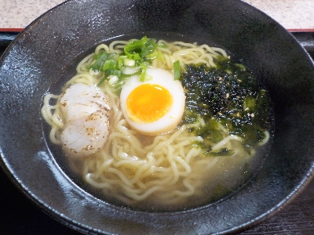

島根県出雲市荻杼町490
更新日 : 2024/04/21

海鮮料理のお店ですが、らーめんもあります。唐揚げもあります。
今日は海らーめんを食べました。細ちじれ麺の塩ラーメンです。
スープがワカメや貝と相性が良く美味しかったです。こってり系ではないので、ぺろっと食べれました。
【おいしいものを食べよう。】【たくさん寝よう。】
【ソロ活をしよう!】【季節感のあることをしよう。】【動画視聴はほどほどに。】【当サイトの全てのコンテンツは無断転載禁止です。】